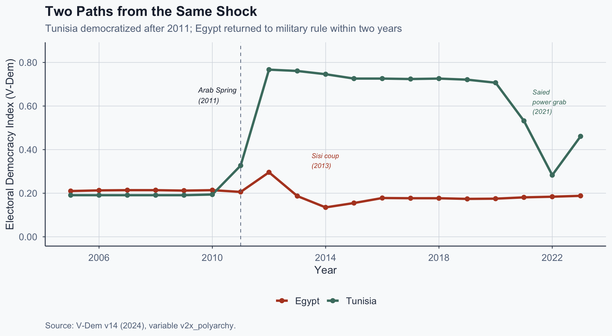
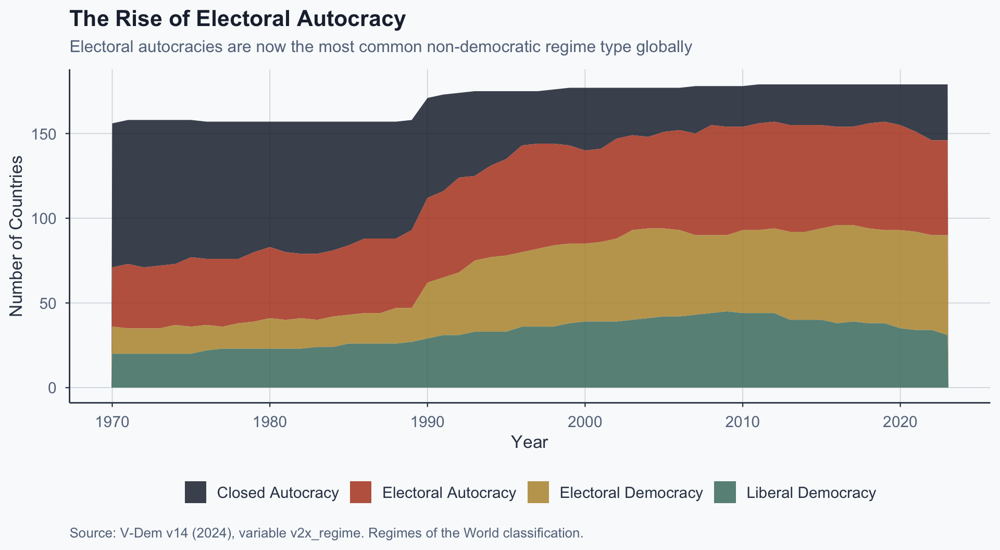
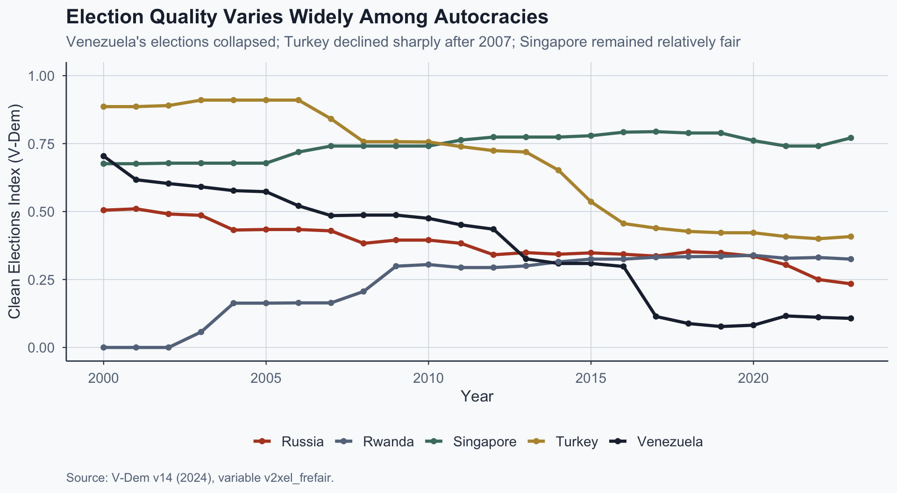

![]()
%%{init:{"theme":"base","themeVariables":{"fontSize":"20px","primaryColor":"#f9fafb","primaryBorderColor":"#334155","lineColor":"#64748b"},"flowchart":{"useMaxWidth":true,"nodeSpacing":60,"rankSpacing":80},"width":1150,"height":650}}%%
flowchart LR
A["Dictator Fears<br/>Military Coup"] --> B["Coup-Proofing<br/>Strategies"]
B --> C["Parallel Forces<br/>& Rotation"]
C --> D["Lower<br/>Coup Risk"]
C --> E["Weaker<br/>Military Capacity"]
E --> F["Vulnerability to<br/>External Threats"]
style A fill:#1e293b,color:#fff,stroke:#334155
style B fill:#1e293b,color:#fff,stroke:#334155
style C fill:#b7943a,color:#fff,stroke:#334155
style D fill:#4a7c6f,color:#fff,stroke:#334155
style E fill:#b44527,color:#fff,stroke:#334155
style F fill:#b44527,color:#fff,stroke:#334155
Comparative Politics
Lecture 7: Autocracies
The Puzzle
Tunisia vs. Egypt, 2011
Same region, same season, same trigger — yet the outcomes diverged radically.
Tunisia: Ben Ali fled → free elections → democratic transition
Egypt: Mubarak fell → military council → Sisi coup (2013) → back to autocracy
The question: Why did the same shock produce democracy in one case and military rule in the other?
Tahrir Square, Cairo, 2011. Photo: Wikimedia Commons (CC BY-SA 3.0).
The Argument
To answer this, we need a framework. Today’s lecture builds one claim in three steps:
The same institutional arrangements that keep autocracies alive determine how they die.
- Autocrats face a structural dilemma — they need elite cooperation but cannot credibly guarantee rewards
- They build institutions (parties, legislatures, elections) to solve that dilemma — but those institutions develop their own logic
- When the regime breaks down, how it was organized predicts how it falls — and whether what follows is democracy or a new autocracy
Two Paths from the Same Shock

Figure 1: V-Dem v14, variable v2x_polyarchy.
The Dictator’s Dilemma
Svolik’s Two Problems
Svolik (2012): every autocrat faces two distinct threats, and solving one worsens the other.
- Power-sharing problem: the dictator needs a ruling coalition but cannot credibly commit to sharing power tomorrow — elites must decide whether to cooperate or preempt
- Control problem: preventing mass challenges requires repression — but repression destroys the information needed to know where threats actually are
- The tension: repression and censorship make the power-sharing problem worse — allies lose information too and grow more suspicious
Geddes, Wright & Frantz: Regime Types
Not all autocracies are the same. GWF (2014) identify types by who controls power:
- Military regime: armed forces rule collectively (junta)
- Single-party regime: the party organization controls leadership selection
- Personalist regime: power concentrated in one individual
- Monarchy: hereditary succession rules constrain the ruler
Each type solves the dictator’s dilemma differently — and breaks down differently
Regime Types: Institutional Logic
| Type | Who rules | Key vulnerability | Example |
|---|---|---|---|
| Military | Officer corps collectively | Internal factions | Myanmar |
| Single-party | Party organization | Elite splits | China (CCP) |
| Personalist | One individual | Succession crisis | Libya (Gaddafi) |
| Monarchy | Royal family | Reform pressure | Saudi Arabia |
Worked Example: Egypt Before 2011
How does Egypt fit the GWF framework?
- Military: controlled the presidency, held vast economic assets (est. 25–40% of GDP), dominated the security apparatus
- Party: Mubarak also ruled through the NDP — a patronage machine that managed elections and distributed rents
- Classification: military regime or single-party? GWF code it as military/personalist hybrid
- Predicted breakdown: internal military split — not popular revolution
- What actually happened in 2011: exactly that
Electoral Autocracy: The Modal Regime Type

Figure 2: V-Dem v14, variable v2x_regime.
Coup-Proofing
Autocrats fear their own security forces most. Coup-proofing weakens the military to prevent overthrow:
- Parallel security forces (Republican Guard, militia)
- Rotate commanders to prevent power accumulation
- Ethnically stack officer corps with loyalists
Saddam Hussein, 1979. Photo: public domain, Wikimedia Commons.
Coup-Proofing
Autocrats fear their own security forces most. Coup-proofing weakens the military to prevent overthrow:
The cost: weakened external defense. Saddam’s army collapsed in 1991 and 2003 — coup-proofing had hollowed it out.
Saddam Hussein, 1979. Photo: public domain, Wikimedia Commons.
The Coup-Proofing Tradeoff
Exercise 1: Classify the Regime
Class Exercise (5 min)
Using the Geddes framework:
Pick one — China under Xi or Russia under Putin.
What regime type is it? Based on that classification, what is the most likely breakdown mode and why?
Institutions as Commitment Devices
The Puzzle of Autocratic Institutions
Regime type tells us who holds power. But autocrats also build legislatures, parties, and elections. If they hold all the power, why constrain themselves?
The naive answer: they are window dressing — pure facades with no real function.
The better answer: autocratic institutions solve real coordination problems (Gandhi, 2008; Svolik, 2012).
The key objection: can’t the dictator simply override them when inconvenient?
The Power-Sharing Problem
%%{init:{"theme":"base","themeVariables":{"fontSize":"20px","primaryColor":"#f9fafb","primaryBorderColor":"#334155","lineColor":"#64748b"},"flowchart":{"useMaxWidth":true,"nodeSpacing":60,"rankSpacing":80},"width":1150,"height":650}}%%
flowchart LR
A["Dictator Needs<br/>Elite Cooperation"] --> B["Promises<br/>Future Rewards"]
B --> C["Elites Fear<br/>Reneging"]
C --> D["Build Institution<br/>(Party / Legislature)"]
D --> E["Credible<br/>Constraint"]
E --> F["Elite Cooperation<br/>Secured"]
style A fill:#1e293b,color:#fff,stroke:#334155
style B fill:#334155,color:#fff,stroke:#334155
style C fill:#b44527,color:#fff,stroke:#334155
style D fill:#b7943a,color:#fff,stroke:#334155
style E fill:#4a7c6f,color:#fff,stroke:#334155
style F fill:#4a7c6f,color:#fff,stroke:#334155
Co-optation: How It Actually Works
Gandhi (2008): autocratic institutions let the dictator buy off potential challengers instead of fighting them.
- Parties and legislatures give elites a formal stake — committee chairs, budget access, patronage
- Cheaper than repression, more credible than verbal promises: the institution creates observable, repeated benefits (Gandhi & Przeworski, 2007)
- PRI Mexico (1929–2000): rotated the presidency every 6 years, distributed governorships across factions, channeled rents through the party hierarchy
- Defection meant losing access to the entire patronage network — so ambitious politicians stayed inside
- Result: 71 years in power
Elections as an Information Tool
Magaloni (2006): autocratic elections are manipulated — but they are not useless. They produce information the regime cannot get any other way.
- Vote shares by district reveal where opposition support is concentrated — mapping dissent geographically
- Turnout patterns signal whether local officials can actually mobilize — testing the loyalty of the regime’s own agents
- Margin of victory signals strength to would-be challengers: a 90% landslide discourages opposition; a 55% squeaker invites it
This explains a puzzle: why do autocrats hold elections they could simply cancel? Because cancelling them would blind the regime to the very threats it needs to monitor.
Election Quality Across Autocracies

Figure 3: V-Dem v14, variable v2xel_frefair.
The Institutional Trap
Svolik’s (2012) key insight: institutions develop their own constituencies.
- Elites invested in the party resist its dismantling
- The legislature meant to serve the dictator becomes a constraint
- Party-based autocracies (China, PRI Mexico) are more durable
- But also harder for the ruler to dominate unilaterally
The paradox: the institution that solves today’s problem creates tomorrow’s constraint
But How Do We Know Institutions Matter?
We claimed party-based autocracies are more durable. But there is a serious identification problem:
We only observe institutions in regimes that survived long enough to build them.
- Regimes that collapsed early never developed parties or legislatures
- So we compare survivors with institutions to short-lived regimes without them
- The correlation may be spurious — both caused by a third factor (e.g., resource wealth, geopolitical support)
But How Do We Know Institutions Matter?
We claimed party-based autocracies are more durable. But there is a serious identification problem:
We only observe institutions in regimes that survived long enough to build them.
This matters: if institutions are endogenous to survival, the entire causal story changes. How would you test whether institutions actually cause regime durability?
Exercise 2: Who Needs Elections?
Class Exercise (5 min)
Russia holds managed elections every cycle. Saudi Arabia does not hold national elections at all. Both regimes have survived for decades.
If elections provide valuable information to autocrats (Magaloni, 2006), how does Saudi Arabia govern without them? What substitute, if any, serves the same function?
Breakdown and Transition
How Autocracies End: Elite Defection
We have seen how autocrats build institutions to manage elite loyalty. But what happens when those arrangements fail? The decisive mechanism is elite defection (Svolik, 2012):
- Coalition members recalculate: costs of loyalty > costs of defection
- Security forces splinter or refuse to fire on protesters
- The dictator’s allies abandon ship — not the public
- This is why predicting breakdown requires watching elites, not crowds
Regime Type Predicts Breakdown
| Regime type | Most common exit | Why |
|---|---|---|
| Military | Return to barracks | Institution has exit norms |
| Single-party | Negotiated transition | Party elites can bargain |
| Personalist | Violent collapse | No succession institution |
| Monarchy | Reform or revolution | Rigid succession rules |
Economic Shocks Work Through Elites
Economic crisis does not directly cause regime change. The causal chain runs through elites:
- Crisis → fewer resources to distribute
- Patronage networks collapse → elites recalculate loyalty
- Elite defection → regime fracture
- Getting the causal chain right matters for identification (Haggard & Kaufman, 2016)
The public matters — but as a trigger, not the mechanism
Linkage and Leverage
Levitsky & Way (2010): two international mechanisms shape regime outcomes.
Leverage: external pressure — sanctions, aid conditionality, diplomatic isolation
- Effective when the autocracy depends on Western support
Linkage: density of economic, social, and communication ties
- Raises the domestic cost of repression
- Harder for autocrats to control information spillovers
Linkage matters more — it is structural, not discretionary
Linkage and Leverage: Tunisia vs. Egypt
How does Levitsky & Way’s framework apply to our puzzle?
| Dimension | Tunisia | Egypt |
|---|---|---|
| Trade ties to EU | ~75% of exports | ~30% of exports |
| Migration links | Large diaspora in France | Smaller Western diaspora |
| Media exposure | French-language media penetration | More insulated media sphere |
| Western leverage | EU association agreement | U.S. military aid ($1.3B/yr) |
| Predicted outcome | High linkage → costly to repress | High leverage but low linkage → aid continues regardless |
Return to Tunisia vs. Egypt
Now we can answer the opening puzzle:
Tunisia:
- Small, professional military — not embedded in regime
- Strong civil society (UGTT labor union)
- High linkage to Europe → costly to repress
Tunisian National Dialogue Quartet, Nobel Prize 2015. Photo: Wikimedia Commons (CC BY 2.0).
Return to Tunisia vs. Egypt
Now we can answer the opening puzzle:
Egypt:
- Military had vast economic holdings — an autonomous institution
- Military removed Mubarak on its own terms
- Lower linkage → less external cost of reverting
Tunisian National Dialogue Quartet, Nobel Prize 2015. Photo: Wikimedia Commons (CC BY 2.0).
What Holds Autocracies Together?
Key Takeaways
The same institutional arrangements that keep autocracies alive determine how they die.
- Two problems — power-sharing with elites vs. control over the population (Svolik)
- Regime type predicts breakdown — military, party, personalist, monarchy (GWF)
- Institutions are real — they solve commitment problems but develop autonomy (Gandhi, Svolik)
- Linkage shapes outcomes — whether breakdown leads to democracy or new autocracy (Levitsky & Way)
Open Questions
- Why are some party autocracies (China) durable while others (PRI Mexico) eventually fall?
- Is electoral autocracy a stable regime type — or a transitional phase?
- Does digital surveillance fundamentally change how autocrats solve the information problem?
References
References
Belkin, A., & Schofer, E. (2003). Toward a structural understanding of coup risk. Journal of Conflict Resolution, 47(5), 594–620.
Gandhi, J. (2008). Political institutions under dictatorship. Cambridge University Press.
Gandhi, J., & Przeworski, A. (2007). Authoritarian institutions and the survival of autocrats. Comparative Political Studies, 40(11), 1279–1301.
Geddes, B., Wright, J., & Frantz, E. (2014). Autocratic breakdown and regime transitions: A new data set. Perspectives on Politics, 12(2), 313–331.
Haggard, S., & Kaufman, R. R. (2016). Dictators and democrats: Masses, elites, and regime change. Princeton University Press.
Levitsky, S., & Way, L. A. (2010). Competitive authoritarianism: Hybrid regimes after the Cold War. Cambridge University Press.
References
Magaloni, B. (2006). Voting for autocracy: Hegemonic party survival and its demise in Mexico. Cambridge University Press.
Powell, J. M. (2012). Determinants of the attempting and outcome of coups d’état. Journal of Conflict Resolution, 56(6), 1017–1040.
Svolik, M. W. (2012). The politics of authoritarian rule. Cambridge University Press.
V-Dem Institute. (2024). Democracy report 2024: Democracy winning and losing at the ballot. University of Gothenburg.
Popescu (JCU) Comparative Politics Lecture 7: Autocracies